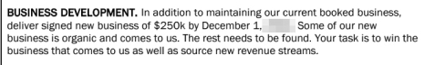

I have been an employee, a consultant, and an entrepreneur in the past decade. I’ve talked to many business owners, consulted teams and managed groups of professionals about their digital strategy, marketing services, and digital transformation.
The digital era has absolutely changed the way we live and work. We are constantly evolving and it is a huge challenge for businesses to hire the right team for their operations. After connecting with over 2500 businesses and attending around 100 interviews in the past 2 years, I have noticed similar behaviors and challenges that appear in the hiring stages. So, based on my experience, which I am sure is similar to other job seekers, I have put together a guide for employers to consider when hiring a new team member.
Nowadays, the opinion that ” if a potential candidate wants this job, they will go through all the steps necessary no matter what!” is wrong and no longer applies in the digital age. Individuals who are used to working with online tools and applications quickly notice a bad user experience as they are searching for the next opportunity.
During my interaction with potential hiring managers, I noticed a few immediate red flags:
_ They forgot my name on the first call or through the first in-person interview
_ After a long resume submission process with several * required questions about the role, they didn’t read my answers and repeated the same questions again during the interview. At times, when I asked if they had read my submission, they were not even aware that there was a Q&A attached to the resume submissions.
_ They never called or attended the interview they scheduled with me. I often had to send reminders 15 minutes after the expected time to ask if they are still interested in the interview. They usually called back, apologized for the delay, had excuses like they were held up in a meeting, or their calendar did not notify them. At this point, I had lost interest in this position already.
_ The hiring manager called me to ask why I did not attend the interview, 30 minutes after I met the same person for the interview This is my personal favorite! When I told them that I had just met with them 30 minutes before, they got confused and changed their tone. They told me that they actually called to say that they are not interested in moving forward with my resume, wished me a great day and hung up. I’m still trying to figure this one out myself!
_ They constantly talked about themselves on the call and had no interest in getting to know me.
_ There was no human connection. I was really excited about the role and on the first call, the conversation was so dry and robotic that I immediately lost my interest in working with that brand.
_ They did not let me know that the in-person interview was actually a group interview‚Ķ for a director role! ü§î
_ They sent me a start date and instructions to onboarding immediately after the call, before sending me a written offer or even discussing a salary.
So based on my experience, I have put together a list of important facts about hiring new talent for your business, in the digital era. If you have any questions or need more information about a specific subject, get in touch with me here. I love hearing your comments and feedback!
Create a smooth and pleasing application process!
Cut down on the steps. Avoid redundant questions. Consider the user experience when you create a job posting. It is ok that at times, you need to hire quickly and to create more exposure, you post the job on many websites and platforms like Indeed or LinkedIn. But make sure that all these postings lead to one place. I often find myself clicking on the “Apply Now” button on at least 5 different websites until I actually get to the submission form. Also, having your job posting on your own website is very important. It gives the candidates a chance to get to know your company and culture, as they apply for the job. From a job seeker’s perspective, not having your job posting on your own website means that you most likely don’t have the time or resources to update your website regularly.
Do you really need a printed copy of my resume?
We all have computers, laptops, and phones. In most cases, the interview takes place in front of a giant screen inside a meeting room anyways. It is much easier to open a website or review a PDF portfolio live on a screen than to show a printed version. You can not demonstrate user experience and functionality of a website for example, in the printed portfolio version. It is not environmentally friendly or cost-efficient for anyone involved in the process. If you prefer to print resumes, please take the responsibility and print your copy beforehand. If you are hiring for a marketing or a digital role, you should expect the candidate to have an online portfolio or a personal website. Otherwise, I suggest moving forward with other candidates.
Make sure that candidates are connecting to the right team members at your organization.
If you have a human resources representative conduct the first interview call, provide them with the necessary information they need to know about the role. Try not to have a contract manager who is filling a temporary position at your company, conduct the first interview. I once had my first interview for a marketing manager role, with a contractor who was leaving the company in 30 days and had only worked there for a total of 4 months. When I asked about the role and where the organization is headed, they mentioned that they are not sure if the company will be around for another 5 years and they are leaving the company in a month anyway. üòê If you know that your staff is gone on vacation or have a temporary replacement, don‚Äôt have someone else conduct meaningless interviews who lack passion and commitment to your organization.
Be on time! Just like you expect your candidates to be.If you are going to be late or can not make it to an interview, let the candidates know immediately. No one likes waiting and just because 2000 people applied to your job posting, it is not an excuse to avoid follow-ups. Always provide clear directions to the interview location and notify if schedule changes happen.
Avoid unrelated and automated online tests.
When you are posting a job on platforms like Indeed, you may have the option to add a generic online assessment to the application process. If you are aiming to lose as many potential hires as quickly as possible, then use these assessment tests. I once had to pass a typing test to be considered for a digital marketing specialist role. In the job description, I was required to have at least 10 years of experience working with Adobe Photoshop and Illustrator. But somehow what was most important to this company was my ability to type words as fast as possible.
Avoid unrelated and automated online tests.
When you are posting a job on platforms like Indeed, you may have the option to add a generic online assessment to the application process. If you are aiming to lose as many potential hires as quickly as possible, then use these assessment tests. I once had to pass a typing test to be considered for a digital marketing specialist role. In the job description, I was required to have at least 10 years of experience working with Adobe Photoshop and Illustrator. But somehow what was most important to this company was my ability to type words as fast as possible.
Demonstrate interest and passion during the interview.
Try not to read from a list of questions, and sound like you are reading from a list of questions. üòé The interview process is intended for you to get to know your potential candidates. Don‚Äôt hesitate to be more casual and less robotic. You can still cover the important areas and have a bit of fun in the meantime.
Stop asking candidates why they want to work at your company?
Here is the answer: they all needed jobs and your company happened to be amongst the other 45 that they applied to on that day. Instead, get to know them on a personal level. Ask what part of the role they feel passionate about? Where do they see themselves in a few years in their career? What part of the role do they find themselves most attracted to?
You’ll get back to me in 5 weeks? No thanks! 
It’s 2020, you can not expect any job hunter to wait 5 weeks to hear from you. In 8 hours of job hunting, I can personally apply to at least 20 jobs, which includes researching the brands, looking at their website and LinkedIn, etc. If your HR manager conducts a call with a candidate in October and the next call with the department manager is scheduled at the end of November, you have already lost touch with this candidate and most likely they will move forward with other opportunities. Cut down your interview process and hiring stages.
Eliminate confusion. Communicate the interview details with your team involved with the hiring.
On a few occasions, I was invited for a second interview and the department director was not informed about my initial conversation with the HR representative. This already demonstrated a lack of internal communication and organization in the company.
Think about your first impressions too! Candidates are evaluating you just as much as you are assessing them.
So if you are late, not dressed for the role, do not have good things to say about the company, or do not pay attention during the interview, it shows a lack of respect for the process and the candidate. Try to sell your brand with passion and honestly to your potential hires.
Did you get thousands of resume submissions? That’s Great! Candidates do not care.
Stop telling them. This is very similar to like your own post on social media.  It indicates pride and may actually apply more pressure on the candidate during the interview. It may be beneficial to use an online platform to help you manage your hiring process. My favorites are Collage, Humi, and Zoho.
It indicates pride and may actually apply more pressure on the candidate during the interview. It may be beneficial to use an online platform to help you manage your hiring process. My favorites are Collage, Humi, and Zoho.
Embrace passion over experience.
Prevent stressing about the small details, especially in the digital marketing landscape and web-related fields. Tech-oriented individuals know how to solve problems. That is one of the basic requirements of working in the digital world. Unlimited free information and learning tools are available online, the most important factor is knowing how to find them. I find myself repeating the following sentence often during my interviews: ” I haven’t used [XY] Platform, but I have used A and B platforms which have the same functionality. I’m sure I can figure out how to repeat the same task on your [XY] Platform in a matter of hours”. Focus on your candidate’s problem-solving abilities and how they approach a challenge you may be facing.
Know exactly what role you are hiring for.
As digital technology becomes more integrated and connected, you must know exactly what role and responsibilities you are hoping to fulfill with your new hire. If you are hiring for a graphic designer and hope to find a candidate who can hopefully write an email copy and use MailChimp to deploy your emails, you are already combining 3 different roles into one. An email marketing specialist, a graphic designer, and a copywriter. This will be setting your hire up for failure. Avoid combining too many responsibilities into one role. You may want to revisit the job description at this point and prioritize your needs according to your budget first. Try hiring smaller agencies if having a big in-house team is not suitable.
Avoid setting up unrealistic KPI’s for your new hires.
Just because a candidate can multitask, it does not mean they can efficiently apply their expertise in all areas. The first step of a successful hiring process is assessing data, your current status, and recognizing your needs vs. your resources. In the past few years, I have personally faced this challenge with several employers. I’ve received a few proposals from companies for digital strategy and brand development roles that included delivering over 100K of new business sales in the first 6 months. I had to write them back and let them know that being a digital strategist and New business developer are two separate roles and require a separate set of skills and challenges. This demonstrates a lack of organizational structure and planning and is an immediate red flag for me. 
In the below example, I was offered a Digital Marketing Strategy Director role starting on August 1st that year. In addition to 2 pages of KPI’s for the role, I was expected to deliver $250K of new business to the company by December 1. I was expected to deliver the best in class digital marketing strategies for the brand, manage the digital team, and execute the marketing strategies. On top of that, deliver $250K of a new business all in 5 months!
KPI Included in my Contract
My Reply:
This example is based on a recent experience. I was going to be hired to launch a new brand/product for a local company. I was asked to build a user-based web application including design, prototype, development, and launch. My role and deliverables for this project had absolutely no connection with sales and new business development. However, the employer thought it is appropriate to include a KPI for $5K of new business in my contract. I had to reply and explain the role and expectations of them.
KPI Included in my Contract

My Reply:
Make your job descriptions real. Don’t copy/paste the content from other posts.
Tell candidates what they will really be doing at the job. As someone who visits Indeed and LinkedIn jobs daily, I come across the same details on many job descriptions. If you are trying to use a similar job posting as inspiration, make sure to only use it as a template and re-write it in your own words. Personal details in job descriptions make them standout to candidates.
Choose the right platform to track your candidates and interviews.
Quantity simply does not guarantee quality in candidates. Rather than cross-posting your job on numerous platforms, focus on 2 or 3 career platforms that have an impact on your industry. Check out Zenefits and JazzHR for examples of all-in-one HR platforms for business.
Invest time in understanding the digital landscape before hiring.
Get a consultant or conduct a digital audit first. To arm your organization with the right team, you need to understand what your digital needs are. Do you have a large mailing list and sending newsletters are highly important for your customer engagement? Do you find that you have high traffic on your website but the conversion rates are low? Are you launching a new brand or a landing page? It is time to look at your existing data first. Review all the potentials and statistics. Learn what role would make the biggest impact on your business and hire for that specific role.
Be prepared to go through hundreds of resumes.
If your job posting has a high submission rate, it means that you do have a great brand positioning and job seekers find value in working at your organization. At the same time, you and your team need to be ready to review these submissions to find the perfect fit for the role. It is a time-consuming task with a high payoff. If you have narrowed down your goals for the role and know what you are looking for in your candidate, the screening process will be much easier. Select your top 10 choices, narrow it down to the top 4/5. Then being the next steps in the hiring process.
Do your research before hiring.
Once you have found the perfect candidate for the job, make sure to take time and review their profile online. Get to know them by sending followup questions. I personally appreciate it when an employer takes the time to ask about my vision or my plan for the role. It is motivating and makes a great first impression before starting a new role.
Build trusting relationships.
Once you have selected the best candidate for the job, it’s time to work on building a great working relationship with them. You must have faith and trust in your team and let the experts that you’ve hired in each field, collaborate and explore ideas. This is why it is vital to include QA and A/B testing in your digital workflow, which leaves room for exploring new and innovative ideas and modifying the old ones.
Build a team, not an army.
Company culture and your working environment are highly important to job seekers. While having a clear brand voice and mission are vital to your business, make sure that you are not imposing those ideas on your team. Actions speak much louder than words. Demonstrating your mission and ideas with actions make a much higher impact on your employees. I remember a few years ago I was consulting a PR firm in Toronto on Digital Transformation. Every Monday the company had an all-staff meeting. The CEO would put up the company mission statement on the screen and everyone in the room had to repeat the statement together out-loud. It was extremely awkward and uncomfortable for everyone in the room. üò¨ Don‚Äôt be that CEO!
Leave your candiate’s personal social media accounts alone.
On several occasions, I’ve been asked to modify my social media pages including my personal LinkedIn page as soon as I got hired at a new role. Just recently working with a local business in Toronto, I was asked to replace my personal information on my LinkedIn to the company mission and branding. This is extremely unprofessional and must be avoided. It should be up to your new hire to find the right time and feel comfortable enough to represent your company on their personal accounts. If your brand is lacking a social presence, you must focus on a strategy to build those channels rather than asking your team members for exposure. The same local business also was checking my social media pages over 5 times per day to make sure I am committing to their contract. All those red flags led to me immediately cancel my agreement.
Look into remote work opportunities and work from home options. A passionate team can make an impact from anywhere.
It is becoming more and more common for companies to provide WFH or remote work options to their employees. Having your employees sit at the office all day no longer makes sense in the digital era, especially in design, development, and marketing. A talented content writer or web developer can perform their responsibilities from anywhere. You may be able to cut costs and provide a better working atmosphere by allowing your team to work from anywhere. Interested in new tools and statistics on remote work? Click here, or visit Carrom, Remote Work Statistics, Remote Work Report, WorkSpace, and my favorite RemoteHQ for inspiration.
Avoid quick fixes and think long term.
Investing time and effort in proper strategy and planning is more important than filling a role quickly to re-patch your existing challenges. Always take the time to revisit your process, evaluate opportunities and be prepared to make changes. Once you have identified the need for specific resources, then it is time for you to hire a team.
What is the cost of confusion for you? How many possible buyers can’t learn about your business in the sea of static? Can customers discover why they need you? A lack of tactics may be costing you a great deal of business. A conversation with me can help you clarify your plan and build a successful business!